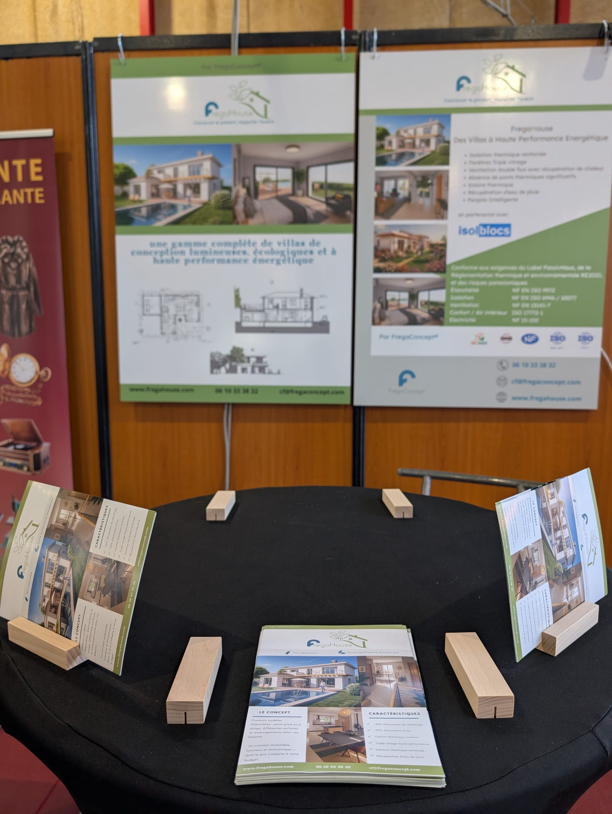
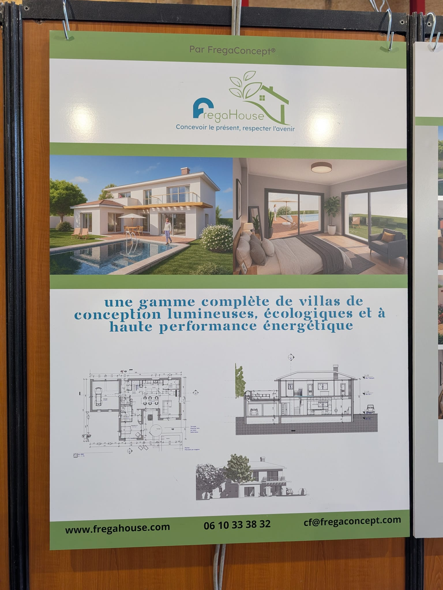
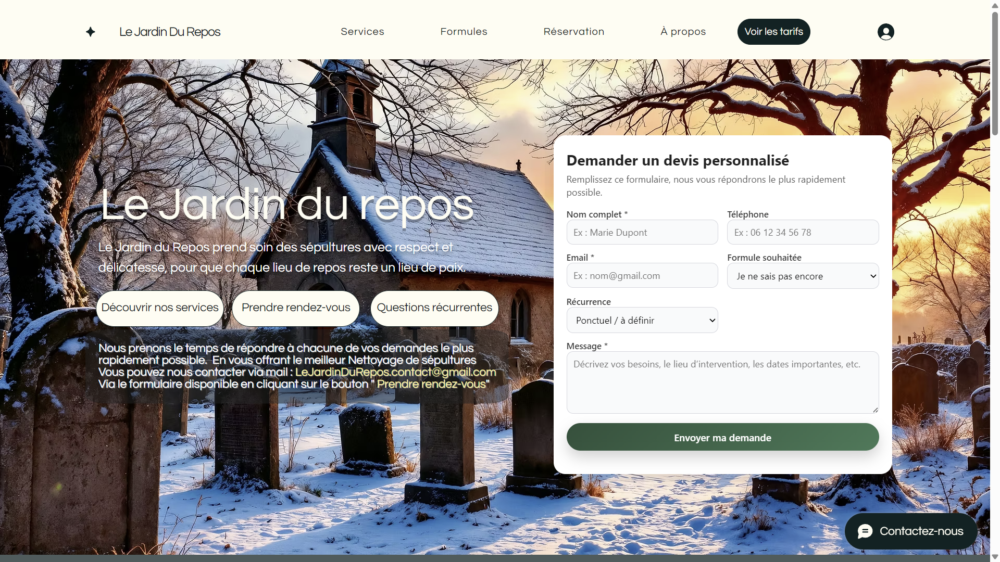
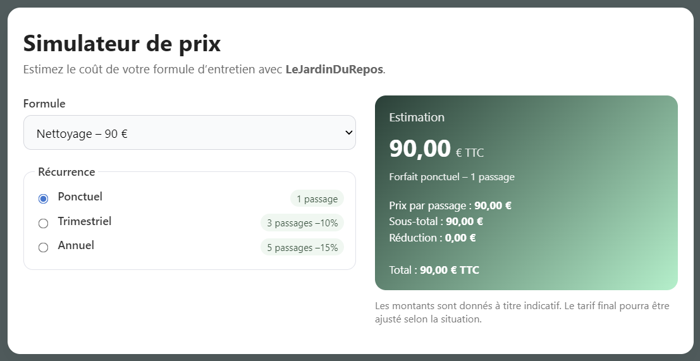

Des projets concrets, menés jusqu'à la livraison.
Avant Studio Balesi, j'ai lancé des marques, conçu des sites et coordonné des équipes. Voici ce que ça donne sur le terrain.


FregaHouse
Mission de communication chez SAS FregaConcept — Sept. 2025 → Avril 2026.
Création de FregaHouse de A à Z : naming des deux gammes (Gaïa & Lumina), identité visuelle, charte graphique, stratégie éditoriale, site internet et supports physiques pour le salon de l'immobilier. Une marque livrée, prête à rencontrer ses premiers clients.
Mon rôle
Naming, branding, charte, site, supports salon, structuration de l'offre.
Chiffres-clés
2 gammes lancées · 30 jours pour livrer la marque · 1 salon couvert.
Ce que j'en retiens — une bonne marque tient si elle se distribue.


Le Jardin du Repos
Service cofondé à deux — Lancé en 2025, en cours.
Conception complète d'un service d'entretien, de nettoyage et de fleurissement de sépultures : positionnement (familles éloignées qui veulent prendre soin d'une tombe), identité de marque, site internet et simulateur tarifaire codé main pour fluidifier le devis. Du concept au premier client signé.
Mon rôle
Concept, branding, site, simulateur, communication de lancement, relation client terrain.
Chiffres-clés
1er client signé · 2 cofondateurs · A→Z (concept à livraison) · Service livré sous la pluie.
Ce que j'en retiens — livrer soi-même change ce qu'on vend.
Shibui
Cofondation, chef de projet — Décembre 2024, en cours.
Cofondé en décembre 2024 comme une plateforme large de développement personnel (Meet'up), le projet a été recentré en 2025 sur un problème concret : la recherche de stage et d'alternance. Même équipe, même ambition, positionnement plus net. Pitch jury Ynov, bêta en cours.
Mon rôle
Cofondation, coordination équipe (16 puis 12 personnes), recentrage produit, pitch jury, structuration business.
Chiffres-clés
16 personnes coordonnées sur Meet'up · 12 sur Shibui · 1 pivot assumé · Bêta en cours.
Ce que j'en retiens — savoir tuer son idée initiale, c'est savoir avancer.
Balesi. antoinebale.github.io
Portfolio éditorial
Projet personnel — Projet permanent.
Conception et développement d'un site portfolio à l'identité éditoriale soignée : structure, direction artistique, intégration et mise en ligne. Tout a été réalisé à la main, sans framework, sans constructeur de page. Une vitrine étudiante distincte de Studio Balesi.
Mon rôle
Direction artistique, contenu, développement front, hébergement GitHub Pages.
Stack
HTML5 sémantique, CSS variables modernes, JavaScript vanilla, déploiement GitHub Pages.
Ce que j'en retiens — pas développeur, mais tout ce que je peux faire à la main, je le fais à la main.
Votre projet pourrait être le prochain.
Un premier échange gratuit, sans engagement, pour comprendre votre besoin et voir si je peux vous aider.
En discuter